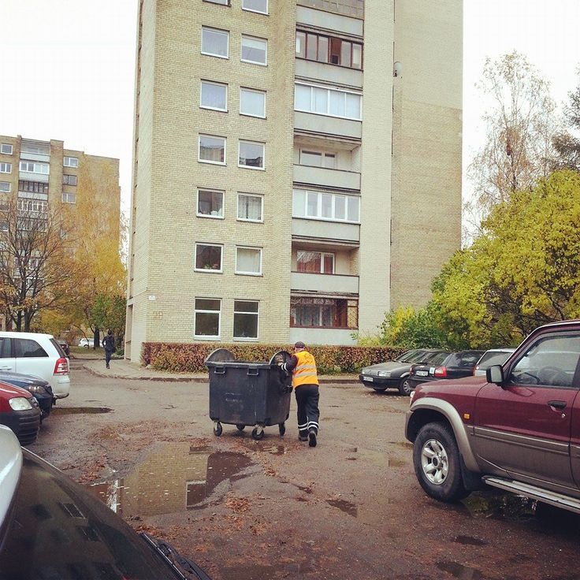

Statybiniai vagonėliai | Buitiniai konteineriai | Transrifus
2020.10.29 13:38
Kontaktai Skyriai Karjera Išpardavimas Blogas Apie mus Projektai LT EN RU Prekių krepšelis 0
Jūsų prekių krepšelis tuščias
Prisijungti Registruotis +370 37 337410 El.paštas: info@transrifus.ltI-V 7:30 - 17:00
VI - VII Nedirbame
Pastoliai Visi pastoliai Fasadiniai pastoliai Moduliniai pleištiniai pastoliai Mobilūs bokšteliai Universalios pastolių dalys Tribūnos Pastolių uždengimas, termo plėvelė Krautuvai Palečių vežimėliai ir kita sandėliavimo įranga Nauji krautuvai Elektriniai šakiniai krautuvai Dyzeliniai / dujiniai šakiniai krautuvai Užsakymų rinktuvai Padėklų vežimėliai Rietuvai Padėklų keltuvai Krovinių vilkikai Mobilios rampos Šoniniai ir keturkrypčiai krautuvai Keturkrypčiai krautuvai Šoniniai krautuvai Flexi krautuvai Naudoti krautuvai Nuoma Krautuvų dalys ir priedai Krautuvų padangos / grandinės / dygliai Servisas Klojiniai Klojiniai pamatams ir sienoms Perdangos klojiniai Kolonų klojiniai Vienpusiai klojiniai Betonavimo priedai Ankeriai Armatūros fiksatoriai nestabiliam pagrindui Armatūros fiksatoriai perdangai Armatūros fiksatoriai sienoms Kamščiai / antgaliai Plastikiniai trikampiai kampams Tarparmatūriniai fiksatoriai Viela Vienkartinės kolonos Kiti priedai Konteinerinės patalpos Buitiniai konteineriai Sandėliavimo, jūriniai konteineriai Laiptinės konteineriams Statybinė technika Statybiniai keltuvai liftai Statybinio laužo latakai Tranšėjų sutvirtinimai Laikinos konstrukcijos Laikinas stogas Laikini laiptai Perdangos aptvėrimai (EN 13374) - apsaugos nuo kritimo Laikinos tvoros Kontaktai - Skyriai Pastoliai ir statybinė technika Klojiniai ir betonavimo priedai Krautuvų skyrius Konteinerinės patalpos Administracija Prisijungti Registruotis Prekių krepšelis 0Jūsų prekių krepšelis tuščias
Pagrindinis Konteinerinės patalpos Buitiniai konteineriaiBuitiniai konteineriai
Pastoliai Krautuvai Klojiniai Konteinerinės patalpos Buitiniai konteineriai Sandėliavimo, jūriniai konteineriai Laiptinės konteineriams Statybinė technika Laikinos konstrukcijosStatybiniai vagonėliai (buitiniai konteineriai) CONTAINEX, CONTIMADE, EDIL EUGANEA
Dėl tvirtumo ir konstrukcinių savybių, jūriniai konteineriai jau kuris laikas naudojami ūkyje – nuo sandėliukų, pašiūrių įrankiams iki gyvenimui skirtų patalpų. Tiesa, vertėtų paminėti, kad dažniausiai naudojami nenauji, krovinių transportavimui netinkami konteineriai.
Statybiniai vagonėliai – tik vienas iš buitinių konteinerių panaudojimo būdų. Galbūt svarstote galimybę įsikurti konteineriniame name? Siūlome tobulesnės konstrukcijos buitinius (modulinius) konteinerius, o jūrinį konteinerį naudokite nebent kaip sandėliuką.
Parduodame ir nuomojame naujus ir naudotus buitinius konteinerius, kurie nėra perdaryti iš jūrinių konteinerių!
Buitiniai konteineriai yra gaminami iš gamykliškai pagamintų daugiasluoksnių apšiltintų plokščių, o konstrukcija leidžia nesudėtingai išmontuoti sienas, sujungti keletą konteinerių į vieną patalpą, įrengti sanitarinius mazgus, šildymo prietaisus ir kt.
Buitinių konteinerių įrengimas
Statybiniai vagonėliai (buitiniai konteineriai) jau seniai nepakeičiami statybų aikštelėse kaip darbo vieta darbų vadovui, darbininkų persirengimui ir poilsiui. Tačiau šių konteinerių populiarumas kasdien auga ir Lietuvoje. Tai lemia beveik neribotos panaudojimo galimybės.
Dėl didelio konteinerių naudojimo diapazono, jie gali būti naudojami įvairiose sferose. Daugumą konteinerinių patalpų galima sujungti vieną su kitu, formuoti konteinerines modulines sistemas. Išmontuojant vidines sienas, galima suformuoti pageidaujamo dydžio patalpas. Tad konteineriai puikiai tinka tiek sandėliavimui ar transportavimui, tiek gyvenamosioms ar ofiso patalpoms formuoti.
Visuomet galite kreiptis į mūsų specialistus - jie padės Jums išsirinkti optimaliausią variantą!!
Kainos nurodytos be PVM
Prekės kodas: CTX basic Konteinerinė patalpa 20p (6m) Containex BASIC Nuo 3690,00€ Kiekis: Mažas likutis Prekės kodas: CTX 20 Konteinerinė patalpa 20p (6m) Containex Nuomos kaina 120,00€ Nuo 4190,00€ Kiekis: Yra sandėlyje Prekės kodas: CTX 20 WC Konteinerinė patalpa su san. mazgu 20p (6m) Nuomos kaina 170,00€ Nuo 5290,00€ Kiekis: Mažas likutis Prekės kodas: CTX 2x20 Dviguba konteinerinė patalpa 20p (6x5 m) Nuomos kaina 240,00€ Nuo 8390,00€ Kiekis: Mažas likutis Prekės kodas: CTX 20 vitrina Konteinerinė patalpa su vitrinomis 20p (6m) Nuomos kaina 160,00€ Nuo 5450,00€ Kiekis: Mažas likutis Prekės kodas: CTX 10 Konteinerinė patalpa 10p (3m) Nuomos kaina 100,00€ Nuo 3690,00€ Kiekis: Mažas likutis Prekės kodas: EDIL-3 Konteinerinė patalpa EDIL eco Nuo 3050,00€ Kiekis: Mažas likutis Prekės kodas: - Modulinių statinių sprendimai Kiekis: Mažas likutis Prekės kodas: Prekybai Kioskai prekybai Kiekis: Mažas likutisKainos nurodytos be PVM
Buitinių konteinerių nuomaNamas iš konteinerių
Žinoma, ir jūrinį konteinerį galima apšiltinti, įstatyti langus ir įrengti gyvenamąsias patalpas. Tačiau reikėtų nepamiršti, kad jūrinis konteineris buvo konstruotas krovinių gabenimui ir bet koks konstrukcinis pakeitimas (pavyzdžiui, angų durims, langams ar netgi visos sienos išpjovimas) gali susilpninti konstrukciją, todėl tai atlikti būtina labai atsakingai ir įvertinti galimą riziką (ypač, jeigu planuojama konteinerius montuoti keliais aukštais). Svarbu paminėti ir tai, kad konteineriai yra gabenami jūromis, todėl dažnai būna pažeisti korozijos. Žiūrint iš finansinės pusės, konteineriai paprastai nedalinami veltui, o dar reikia investuoti darbo ir laiko sutvarkymui ir įrengimui.
Buitiniai konteineriai – gerokai pažangesnė konteinerinė (modulinė) konstrukcija, sukurta panaudojus geriausias jūrinių konteinerių savybes ir standartinius dydžius. Visų konteinerių sienos, grindys ir lubos yra apšiltintos, yra sumontuoti PVC langai su apsauginėmis žaliuzėmis ir įrengta elektros instaliacija su automatiniais saugikliais bei dienos šviesos lempomis. Taip pat galima pasirinkti papildomą įrangą: kondicionierių, ventiliatorių, šildytuvą, baldus ir kt.
BUTINĖS PATALPOS (KONTEINERIAI), MODULINIAI STATINIAI
Konteineriai - puikus sprendimas, kai reikia laikinų ar pastovių gyvenamųjų patalpų. Konteineriai gali būti naudojami įvairiose sferose:
Konteinerinės patalpos biurams, konferencijoms, susitikimams, parodoms, ekspozicijoms Gyvenamosios, miegamosios konteinerinės patalpos Konteinerinės patalpos poilsiui, darbo pertraukoms Sanitarinės (dušai, WC, prausyklos), pirmosios pagalbos patalpos ir konteineriai virtuvėms Vaikų darželiams, mokykloms ir kitoms socialinėms institucijoms Įprastinėms parduotuvėms Konteinerinės patalpos dirbtuvėms Konteinerinės patalpos darbų vykdytojams statybų objektuose Konteinerinės patalpos - gera alternatyva sodo nameliams Toks universalus konteinerių panaudojimas leis jums naudoti konteinerius pagal jūsų reikmes. Mūsų specialistai padės išsirinkti reikiamo tipo ar gabaritų konteinerius.
Konteinerių statymas nereikalauja leidimo statyti. Ši savybė konteinerines patalpas daro patrauklesnes už pastovius statinius.
SANITARINIAI KONTEINERIAI
Sanitariniai konteineriai puikiai tinka visoms higieninėms reikmėms objektuose patenkinti. Konteineriai nuomojami su standartine komplektacija: 2 tualetai, 2 pisuarai, 2 dušai, 5 praustuvai, 300L boileris bei 2000W termostatinis oro šildytuvas. Tad konteinerio komplektacija suteikia galimybę pilnai naudotis tualetu, pilnai nusiprausti po dušu, sušilti ar išsidžiovinti rūbus...
SANDĖLIAVIMO KONTEINERIAI
Siūlomi sandėliavimo konteineriai nuo 2 iki 12 metrų ilgio puikiai tinka statybinių medžagų, statybinės įrangos bei įrankių sandėliavimui. Konteineriai turi tvirtą plieninį rėmą bei saugias ir izoliuotas duris.
KONTEINERINIAI OFISAI / BIURAI
Įmonių poreikiai nuolat kinta, todėl siūlome klientams nuomotis arba įsigyti konteinerines patalpas, skirtas biurui (ofisui). Ofisiniai konteineriai yra pilnai įrengti, gali būti komplektuojami su baldais, kondicionavimo ir (arba) rekuperacine sistema.
Mūsų siūlomos konteinerinės biuro patalpos yra ypač universalios, gali būti išplečiamos, prijungiant papildomus modulius arba mažinamos, demontuojant modulius. Papildomai galime pasiūlyti konteinerius ofisui su vitrininiais langais, papildomais dekoro elementais, pvz. parapetu.
Kaip pagrindinį konteinerinių biurų / ofisų privalumą galime įvardinti spartą – nors gamybos trukmė priklauso nuo projekto sudėtingumo, tačiau gali užtrukti vos nuo vienos iki 8 savaičių.
Buitiniai konteineriai Panevėžyje
Pramonės g. 23, Panevėžys, LT-35291 (UAB „Prorentus )
Tel. +370 45 401046
info@prorentus.lt
Buitiniai konteineriai Kaune
Liepų g. 34A, Garliava, LT-53205
Tel. +370 37 337410
Faks. +370 37 337411
info@transrifus.lt
Dažniausiai užduodami klausimai Kuo skiriasi buitinės ir sandėliavimo konteinerinės patalpos?Buitinės konteinerinės (modulinės) patalpos skirtos žmonėms, o sandėliavimo - daiktams. Buitinės patalpos yra apšiltintos, su vidaus apdaila, durimis ir langais (jeigu klientas nepageidauja kitaip). Tuo tarpu sandėliavimo patalpos dažniausiai būna neapšiltinos, be elektros instaliacijos, o vidaus apdaila - ta pati skarda, kuri naudojama išorinėms sienoms.
Ar galima prie esamos buitinės konteinerinės patalpos prijungti daugiau konteinerių?Žinoma! Konteinerinės modulinės patalpos, skirtos buitinėms reikmėms, tuo ir yra išsiskiria, kad jas galima sujungti ar, prireikus, atjungti. Tiesa, reikia paminėti, kad geriausias rezultatas pasiekiamas jungiant to paties gamintojo produktus.
Kiek laiko užtrunka konteinerinės patalpos pastatymas?Vienos konteinerinės patalpos pastatymas užtrunka apie vieną valandą, jeigu pagrindas yra tinkamai paruoštas.
Vilniaus pastolių padalinys
E. Šimkūnaitės g. 11,
Vilnius LT-04130
Tel: +370 685 44440
vilnius@transrifus.lt
UAB "TRANSRIFUS"
Liepų g. 34A, Garliava,
Kauno raj. LT-53205
Tel: +370 37 337410
info@transrifus.lt
Prisijunkite prie 20 tūkst. prenumeratorių
© 2020 Visos teisės saugomos Sprendimas: Klausti vadybininko Simanas
Karalius
Projektų vadovas
+370 686 85854
konteineris@transrifus.lt
Transrifus.lt svetainėje naudojami slapukai, kurie padeda užtikrinti geresnę teikiamų paslaugų kokybę. Naršydami mūsų svetainėje Jūs patvirtinate, jog sutinkate su transrifus.lt slapukų politika .
Sutinku